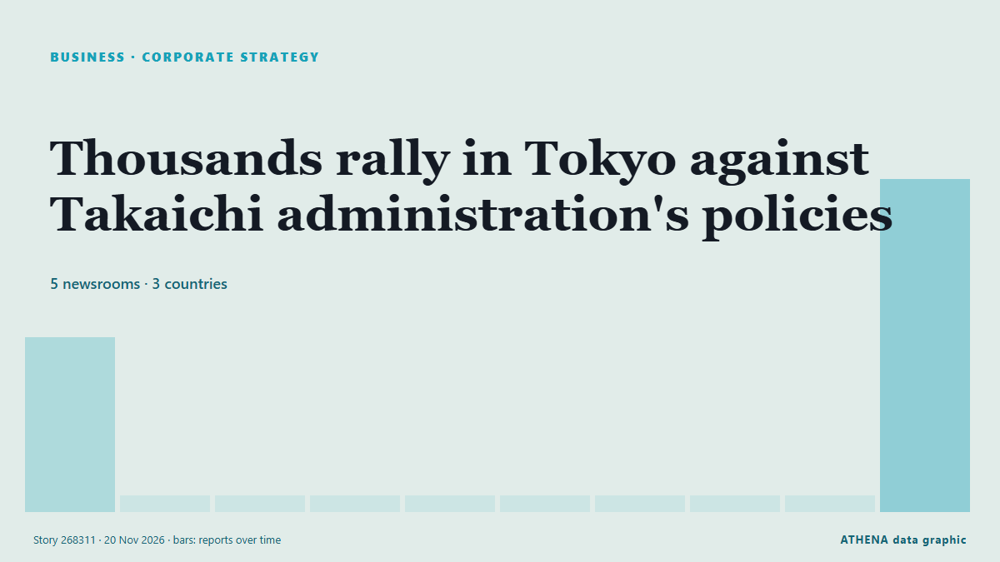

Business, Companies & Investment
SponsoredPresented by  Cybernetics and Artificial Intelligence Lab Welcome to the Cybernetics and Artificial Intelligence Laboratory, established at the Department of Business Administration of the National and Kapodistrian University of Athens. The lab is headed by Professor Dimitrios Thomakos. The lab aims to do research that can be published in top venues. Our research uses tools and methods of Artificial Intelligence, and lies in the following areas: - Forecasting - Decision making - Cyber security - Finance We are always looking forward to collaborating with exceptional students!
Cybernetics and Artificial Intelligence Lab Welcome to the Cybernetics and Artificial Intelligence Laboratory, established at the Department of Business Administration of the National and Kapodistrian University of Athens. The lab is headed by Professor Dimitrios Thomakos. The lab aims to do research that can be published in top venues. Our research uses tools and methods of Artificial Intelligence, and lies in the following areas: - Forecasting - Decision making - Cyber security - Finance We are always looking forward to collaborating with exceptional students!

Corporate strategyThousands rally in Tokyo against Takaichi administration's policies
Reported by 5 outlets in 3 countries since 19 Nov. First reported by Nikkei Asia. ATHENA rates the risk 0.0/10 (none detected), with 55% confidence.
| 7 Nov | 33 |
|---|---|
| 8 Nov | 58 |
| 9 Nov | 108 |
| 10 Nov | 121 |
| 11 Nov | 102 |
| 12 Nov | 95 |
| 13 Nov | 63 |
| 14 Nov | 38 |
| 15 Nov | 36 |
| 16 Nov | 98 |
| 17 Nov | 89 |
| 18 Nov | 80 |
| 19 Nov | 63 |
| 20 Nov | 3 |
Sila Inks Long-Term Offtake Deal with Panasonic Energy to Power Domestic Battery Production
Sila, a leading battery technology and materials company, today announced a commercial offtake agreement with ... from Antara (English)
Target for landmine-free Zimbabwe by 2030 threatened by aid cuts
Global aid cuts threaten the target for Zimbabwe to be free by 2030 of mines planted during the 1970s liberation war, with only four percent of land remaining to be cleared, a demining charity said… from NewZimbabwe
Feds charge train robbers with stealing $22 million in sneakers, electronics
The crew would disable trains along the tracks southeast of downtown Los Angeles and sell the stolen good to retailers and other buyers. from Courthouse News
Infratil manager Morrison opens Abu Dhabi office in global expansion
Morrison’s Abu Dhabi office will be led by partner Vincent Gerritsen. from BusinessDesk
Napier Port lifts earnings despite flat container volumes
Napier Port reported further earnings growth for the financial year ended 30 September 2026, supported by a stronger cargo mix, higher container revenue and its yield-management strategy. from Container News
Vietnam's Ministry of Industry and Trade to support Global Energy Exhibition & Congress Vietnam in 2027
Inaugural event will connect the global energy industry with opportunities in Vietnam as the country plans to mobilize US$136.3 billion in power generation and transmission investment. from Slovenia Times
Prabowo says Indonesia secures US$86.8 billion in APEC deals
President Prabowo Subianto revealed that Indonesia had secured US$86.8 billion in potential investment and economic ... from Antara (English)
LOGISTEED to acquire Neovia Logistics in global expansion deal
Japan’s LOGISTEED has signed a definitive agreement to acquire US-based Neovia Logistics, strengthening its contract logistics operations across North America and Europe. from Container News
GTA 6: Everything you need to know about the highly anticipated game
Economists predict GTA 6 could cost US up to $1bn in lost productivity, with the game set for release at midnight. from Al Jazeera English
Tesla’s $30,000 Cybercab comes with a $299 monthly catch
Tesla can restrict where Cybercabs drive and even block owners from reselling them. from Ars Technica
Nvidia Reports $115.8B in Quarterly Revenue Under Interim CEO
Strong AI infrastructure demand helped Nvidia revenue and profit as the company deals with leadership changes. from EE Times
Eurobank agrees to acquire Fibank, creating Bulgaria’s No. 1 bank
Eurobank has reached an agreement with the main shareholders of First Investment Bank (Fibank) to acquire the Bulgarian lender. from Naftemporiki (English)
Aamer Jamal, Razaullah strike for Pakistan as Sri Lanka lose two wickets early on day three of second Test
Pakistan’s fast bowlers exploited a lively surface to claim two wickets in the opening session of the third day of the second Test against Sri Lanka, leaving the visitors at 166-5 at lunch but with… from Dawn
Trump Administration Unveils Project to Combat Cybercrime
The Trump administration is launching a new effort to combat a surge in crypto fraud and other cybercrimes targeting Americans, attacks that largely come from criminal networks located overseas. from Livemint
Ghana's new Shs250bn presidential jet sparks public outrage
The purchase has sparked outrage over its cost as many Ghanaians struggle with rising cost of living. from BBC News
Hungary plans to complete Paks II audit by year-end
Attila Sagodi, chairman of the board and CEO of Paks II, said Hungary’s new government is very interested in the project, but decision-makers do not yet have all the information they need. from TASS (English)
KFC Franchisee Bankruptcy Puts Dozens of US Restaurants at Risk
Dozens of KFC restaurants across 10 US states have closed or are facing closure after major franchise operator Tasty Chick'n LLC filed for Chapter 11 bankruptcy protection amid dec... from Arab Times
APEC economies to support free trade — Shenzhen Initiative
APEC economies will promote intensive dialogue at the level customs authorities and the business community, facilitate the launch and operation of an APEC center of excellence for paperless trade… from TASS (English)
INTERCARGO re-elects John A Xylas as Chair and welcomes two new Vice-Chairs
Members meet in Rome as INTERCARGO membership passes 500 INTERCARGO, the International Association of Dry Cargo Shipowners, has re-elected John. from Cyprus Shipping News
Hindustan Zinc to invest ₹80,000 cr to raise capacity to 2 million tonnes
The company plans to nearly double metal production capacity to 2 million tonnes over three to five years, driven by rising zinc demand from steel and infrastructure sectors. from Business Standard
Japan's NTT looks to data center business as next profit driver
NVIDIA's share price was up by $6, or 3.9%, after it reported bumper third quarter results, more than doubling sales and profit from a year ago. from UPI World News
ZIM Q3 Profit Surges to $830M as Freight Rates Rise 55%
Israeli containership operator ZIM Integrated Shipping Services reported a sharp increase in third-quarter 2026 earnings, driven by stronger freight rates, higher… from Maritime Professional
Sony defeats £2 billion UK claim over PlayStation Store pricing
Sony fought off a London lawsuit worth almost £2 billion that alleged the PlayStation maker’s “monopoly position” inflated prices for digital games, after a tribunal dismissed the claim in its… from Cyprus Mail
David Beckham Sues for $41 Million After His Fragrance Is Sold in Gas Stations and Discount Stores
Brand reacted with ‘shock and dismay’ after products were also found in a ‘bargain bin inside a gas station’ David Beckham’s company reacted with “shock and dismay” after discovering his branded… from Guardian Business
Best GTA 6 preorder deals ahead of the game’s release
The latest Grand Theft Auto instalment is already breaking records. from Evening Standard (London)
UNICEF fast facts: World leaders meet in Manila to end violence against children
Country: World Source: UN Children's Fund MANILA/NEW YORK, 18 November 2026 – As government ministers, partners, survivors, and young people gather in Manila, Philippines, for the Second Global… from ReliefWeb (UN OCHA)
US proposes tougher green card rules for foreign workers. What Indian workers should know
The US plans tougher green card rules for companies hiring foreign workers, with stricter recruitment checks, a 90-day job advertising requirement and restrictions on employers that have recently… from Livemint
Tencent's $9.8bn capex pushes tech giant into net debt
Revenue during the third quarter of 2026 was 207.3 billion yuan (US$31.1 billion), up 8% year-on-year -- slowing from 11% in the previous quarter. from Free Malaysia Today
Ukraine’s Allies Pledge €70M for Demining
The Netherlands, Norway, the European Union and Finland have pledged €70 million ($77 million ) to support humanitarian demining in Ukraine, Prime Minister Serhii Koretskiy said on Tuesday. from Kyiv Post
Avio's share price rises after Finland's Iceye launches €2 bn takeover bid
(ANSA) - ROME, 17 NOV - The share price of Avio climbed by 12% in early trading on Tuesday after Finnish satellite operator Iceye said it was making a two-billion-euro takeover bid for the Italian… from ANSA English
The best Black Friday and Cyber Monday deals for 2026
Retail predicts Australians will spend about $7.2 billion this Black Friday weekend – and the sales are already starting. from Sydney Morning Herald
Isomorphic Labs raises $5bn from Sequoia and Greenoaks for AI drug design
Isomorphic Labs, the Alphabet drug discovery company run by Demis Hassabis, has raised $5bn in a Series C round co-led by Greenoaks and Sequoia Capital. from The Next Web
Air India Express appoints CFO Deepak Rajawat as CEO
New Delhi: Air India Express on Wednesday announced the appointment of Deepak Rajawat as its Chief Executive Officer (CEO), effective December 1. from Deccan Herald
Iran, Oman, Uzbekistan FMs discuss North-South Corridor capacities
Tehran, IRNA – Foreign ministers of Iran, Oman, and Uzbekistan held a trilateral meeting in Muscat on Tuesday, November 17, to discuss and exchange views on the capacities of the North-South Corridor. from IRNA (English)